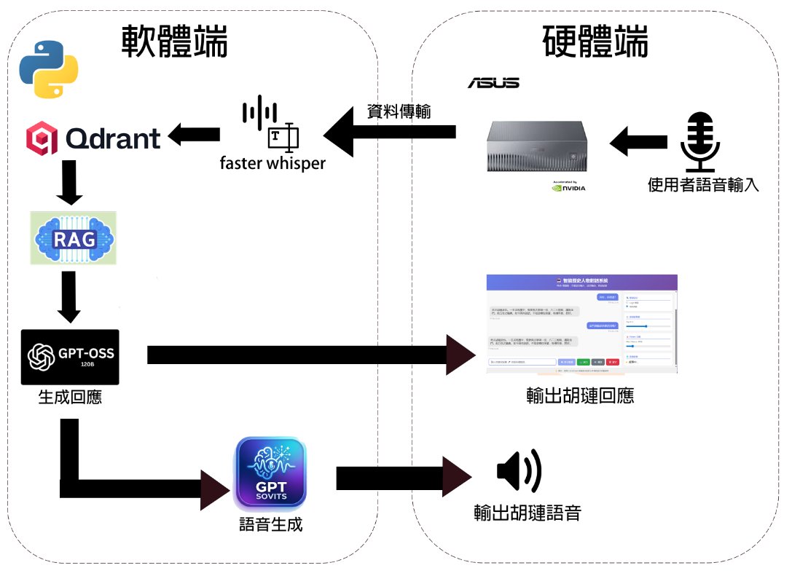
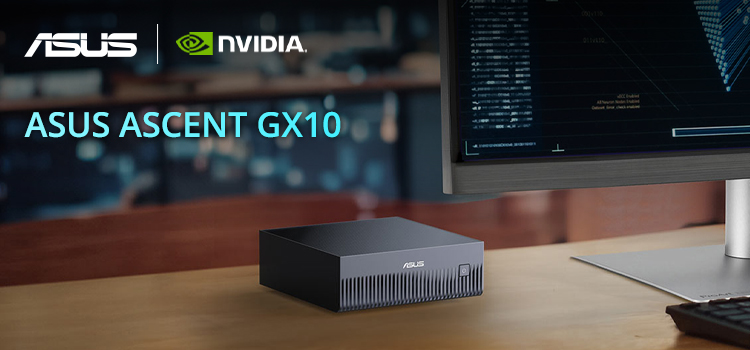
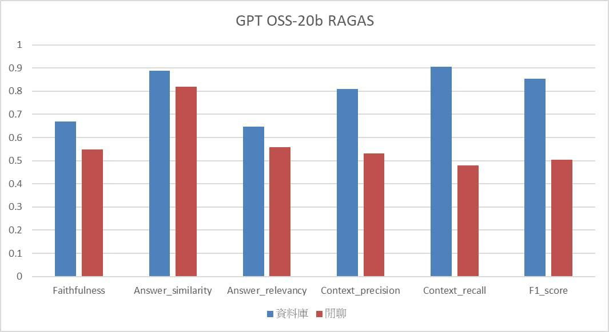
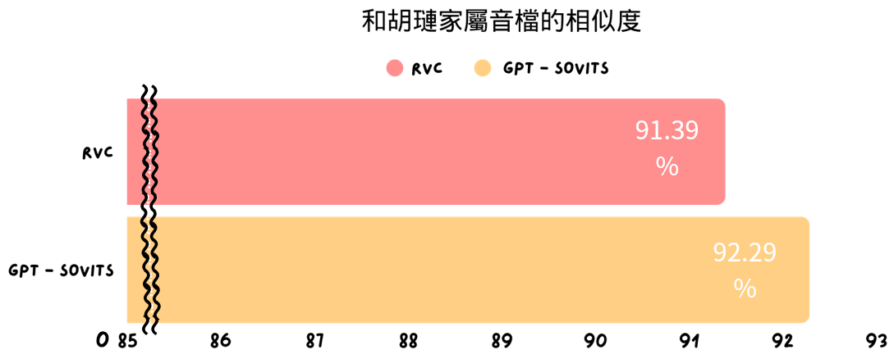

聽懂問題
透過 Faster-Whisper 將使用者語音轉換為文字，作為後續查詢與回覆生成的輸入。
國立金門大學資訊工程學系專題製作
以胡璉將軍為核心導覽角色，結合語音辨識、檢索增強生成、 大型語言模型與語音合成，讓使用者能用自然對話認識金門歷史與戰地文化。
Project Overview
傳統導覽多半依賴解說牌、紙本資料或固定影片，資訊傳遞較單向，也較難吸引習慣互動式內容的年輕族群。本專題希望透過 AI 技術，降低導覽人力負擔，同時提升文化介紹的趣味性與沉浸感。
系統以被稱為「金門現代恩主公」的胡璉將軍作為虛擬導覽角色，讓使用者可以提出問題，並獲得具備史料依據的語音回覆。
透過 Faster-Whisper 將使用者語音轉換為文字，作為後續查詢與回覆生成的輸入。
使用 Multilingual E5 與 Qdrant 建立向量資料庫，快速找出和問題最相關的歷史內容。
結合 Hybrid RAG 與大型語言模型，讓回答更貼近史料脈絡並降低錯誤生成。
透過 GPT-SoVITS 將文字轉成語音，營造與歷史人物對話的沉浸式感受。
System Flow
使用者說出問題後，系統會先完成語音辨識，再進入知識檢索與模型生成，最後以合成語音播放回答。

Demo Video
透過實際展示影片，可以快速了解 AI 即時互動導覽系統的操作畫面與語音互動成果。
Core Technology
作為邊緣 AI 運算平台，支援本地推論，讓系統在無外部網路時仍可運作。
負責語音轉文字，兼顧辨識效率與低延遲，讓互動更即時。
將胡璉將軍相關文本轉為語意向量，提供精準的歷史資料檢索。
將檢索結果重新排序與篩選，協助模型產生更可靠的導覽內容。
以本地化大型語言模型生成具邏輯與脈絡的回答。
將回覆轉為自然語音，提升導覽角色的臨場感。

Local Deployment
本專題將模型與資料庫部署在邊緣設備上，降低對雲端服務的依賴，也讓導覽場域在網路不穩定時仍能維持基本運作。
Results
資料庫問答場景中，系統能有效找回相關史料內容。
生成回答與標準答案具備良好語意一致性。
GPT-SoVITS 合成語音具備接近原音檔的聲音表現。


Team
指導老師：趙于翔 副教授
專題組員：汪章貴、楊松城、吳尚樺、林彥廷、藍健洲